Interactive Story Website Inspired by the Adventure of the Straw Hat Pirates
Traditional storytelling websites are static and lack immersive interaction for users.
Built an interactive web experience that allows users to follow a dynamic story through character dialogue, scene transitions, and visual novel styled UI.
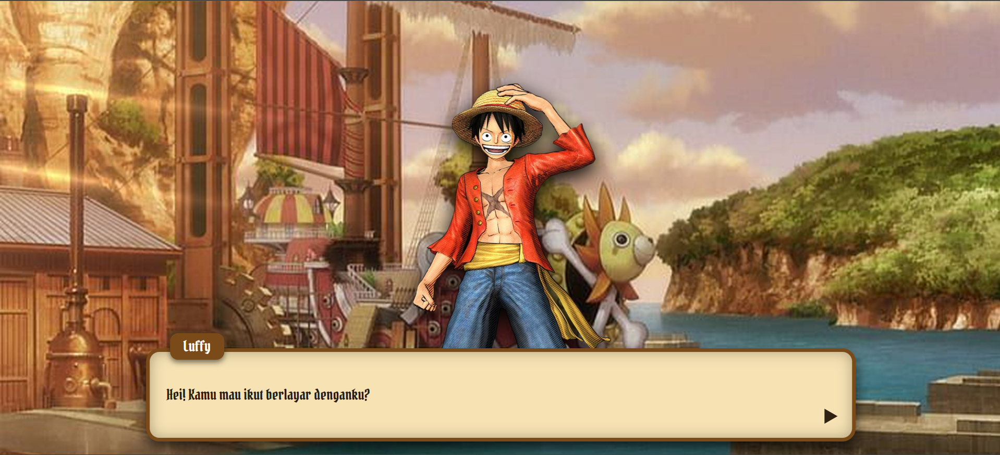
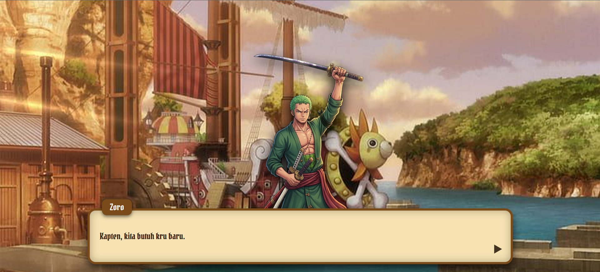
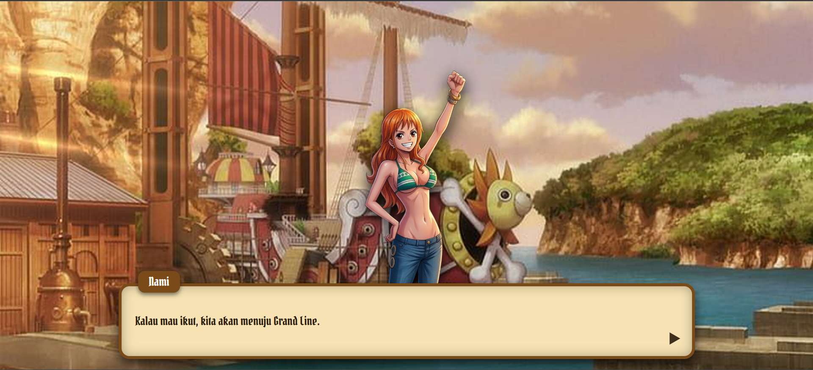
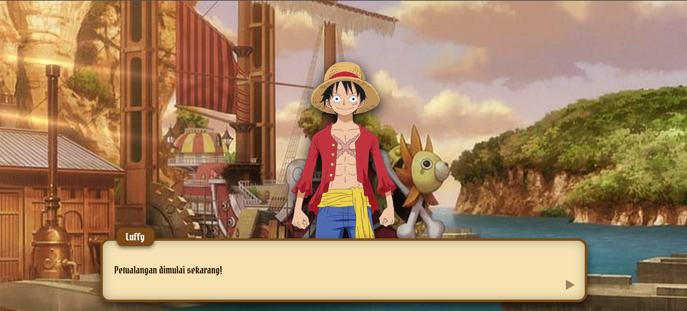
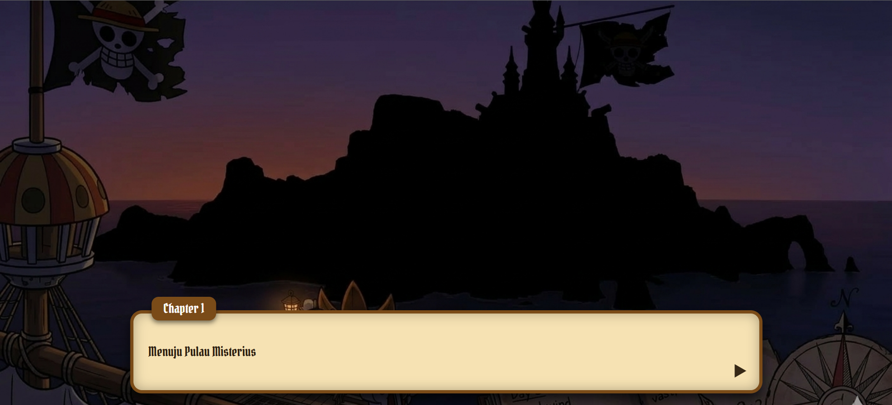
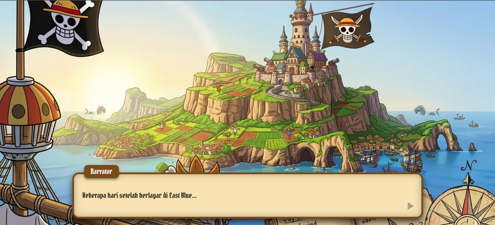
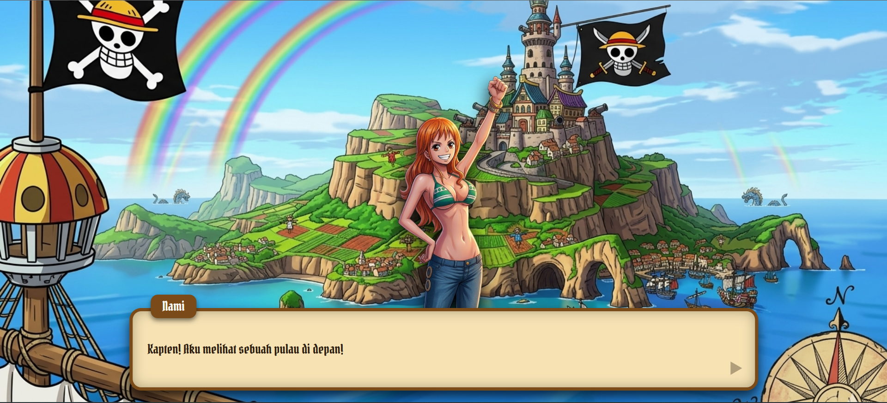
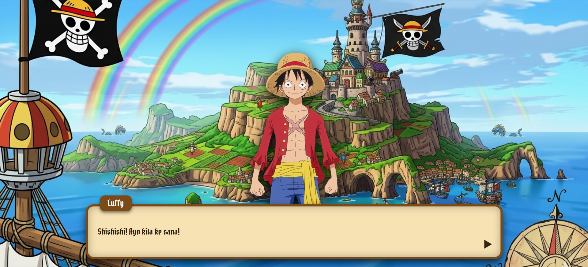
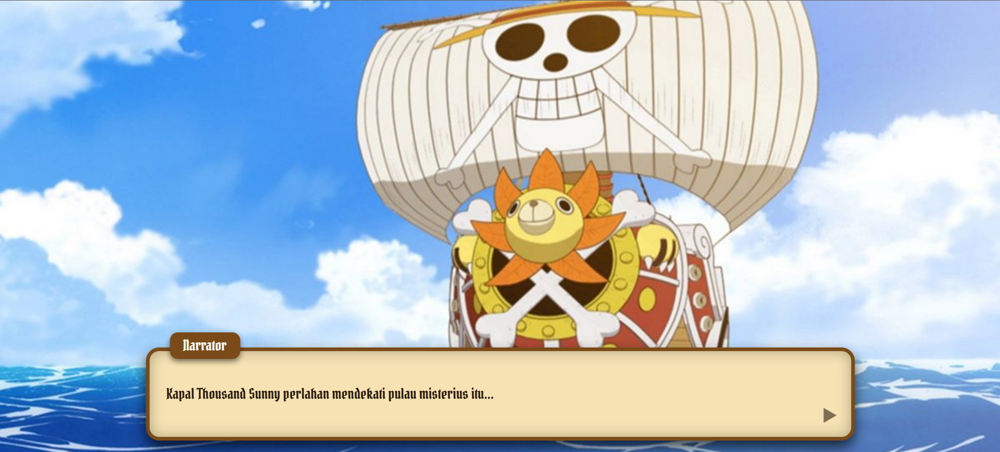
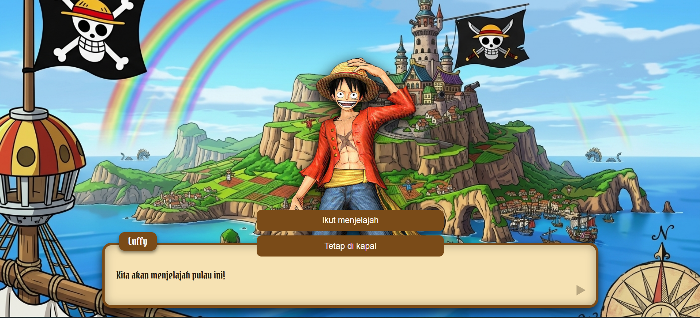
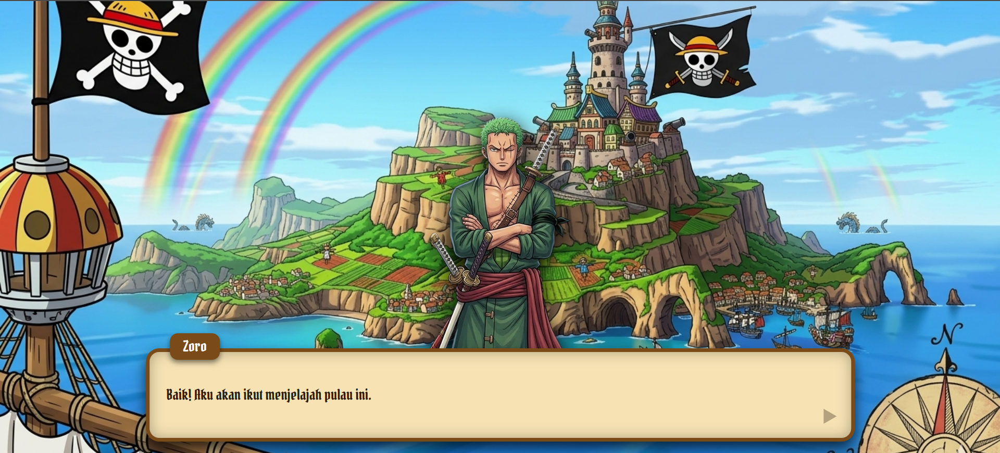